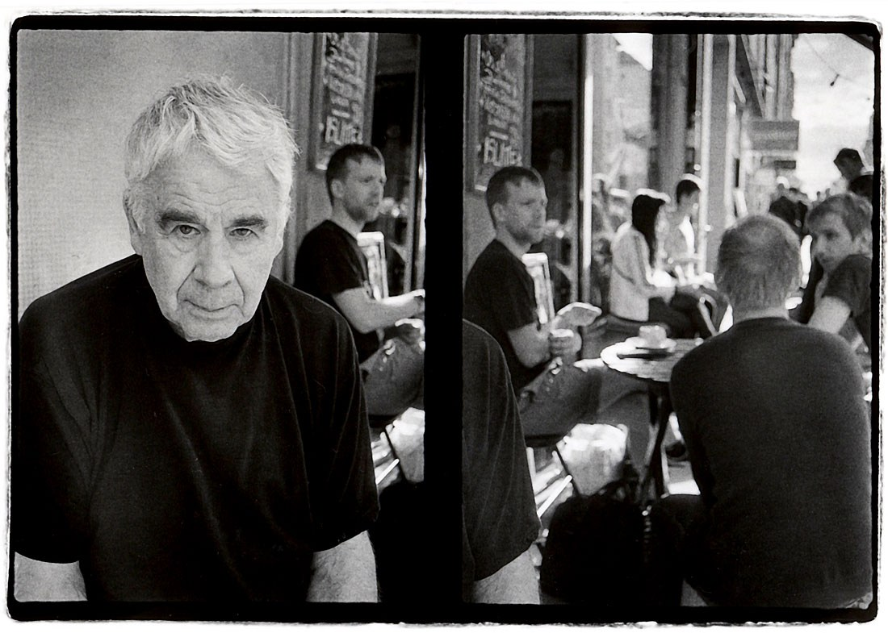

Om att stå på rätt ställe
A conversation with Gunnar Smoliansky (1933–2019), first published in 2009.

The conversation
After attending the press presentation for his Kulturhuset exhibition on 12 June 2008, I met Gunnar Smoliansky for a longer conversation in Stockholm on 30 June. We spoke about the difference between making a photograph and judging it later, about contact sheets and old negatives, and about the particular intimacy of small photographic prints.
Smoliansky's attentive way of looking at ordinary things—and his patience with the image—has had a lasting influence on my own photography.
A photograph at a time
He was reluctant to describe his work in terms of projects. A photograph could remain unseen for years before it became meaningful. His subjects often lay in modest details: traces of people, surfaces, shadows and overlooked places.
The interview was written in Swedish, revised after feedback and discussed with Smoliansky. An English version appeared on The F Blog on 16 January 2009. A short Swedish excerpt subsequently appeared on the Swedish Association of Professional Photographers' website.
Returning to the recordings
The original interview notes and two audio recordings have survived. I am returning to this material to distinguish what was said in 2008 from the perspective I have developed since. A new essay is in preparation; the original interview remains the primary source.